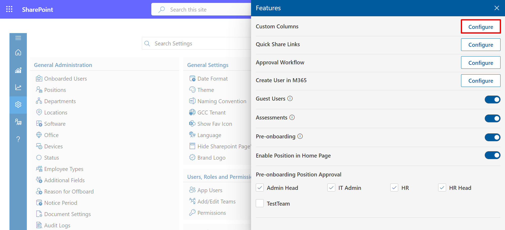
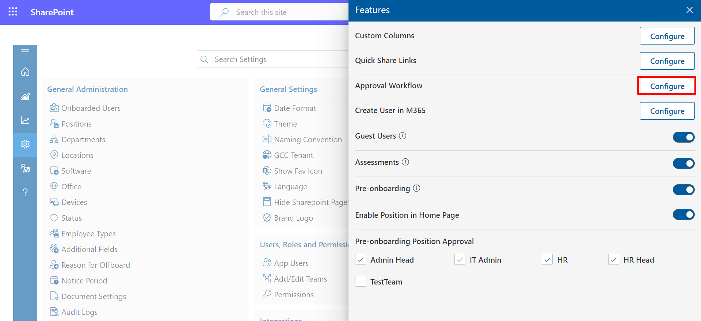
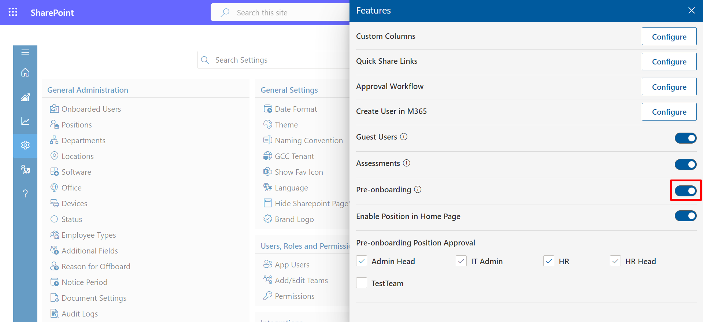

Features
Within this section, you can incorporate custom columns, activate user creation in M365 and guest users, and establish pre-onboarding approval settings.
Custom-Columns
- Select Configure to continue processing
- You can add custom fields to projects and user pages from here.
- To add custom fields to the project page, click on configure button, open the custom filed then click on Add button. Select the project as a category type, fill in the other details, and submit it..
In this section, you have the option to add custom columns.


Quick-Share-Links
- Select Configure to continue processing
- click on +Addto add Quick Links
- Add The Options Accordingly. And Click on Save Button


Approval Workflow
- Select Configure to continue processing
- click on +Addto add Approval Workflow
- Add The Options Accordingly. And Click on Save icon
In this section, you can set up an approval workflow.



Create-User-in-M365
- Select Configure to continue processing
- This is onboarding premium feature, please contact with HR365 to enable this feature. Please write to appsupport@hr365.us


Guest-Users
- The "Display Guest User" toggle allows you to control the visibility of guest user information within your application or system.

Assessments
- Organizational assessments offer valuable insights into employee strengths and areas for improvement, nurturing a culture of ongoing learning and development. Through systematic evaluation of performance and skills, organizations can make informed decisions to enhance their workforce and accomplish strategic objectives.

Preonboarding
- The "Make Pre-Onboarding Visible" toggle allows you to control the visibility of the pre-onboarding process within your platform or system.
- The "Approving Pre-Onboarding Workflow" feature empowers designated roles or team members to review and approve the pre-onboarding process for new users.

Pre-onboarding Position Approval
In the "Positions" section, we can request approval for the position that has been created. Here, we simply select the team to which the approval request should be routed.